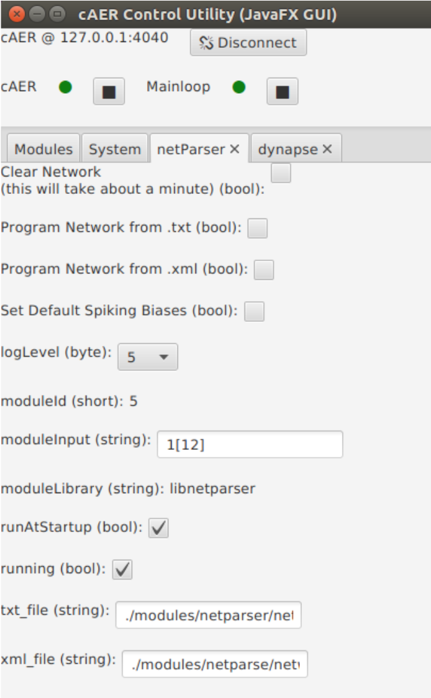
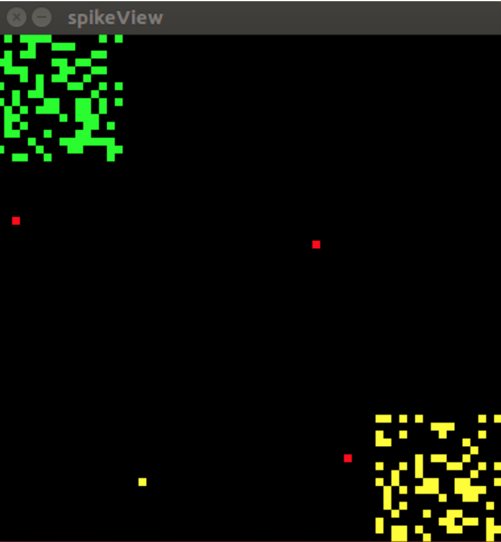
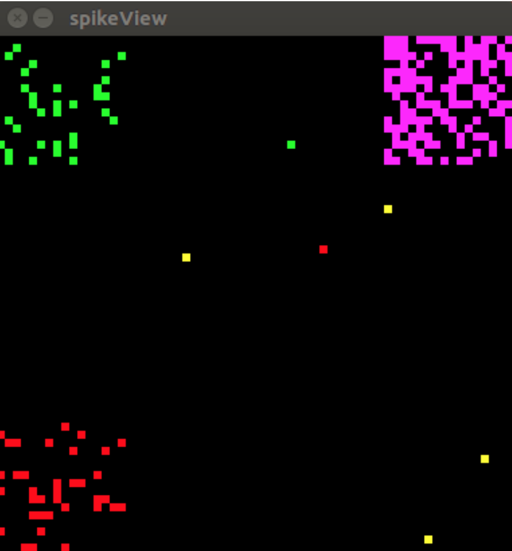

The netparser is a network (neural network) manager. It serves two main functions:
If you just want to use this module to easily program dynapse neuron connections read the tutorial section.
If you want to understand how this module works so that you can call its functions as an API inside cAER or contribute to it, read the documentation first, then come back and read the tutorial.
This module includes a parser that can "read in" a network topology from either a .txt or an .xml file and program the dynapse to match it.
In this section I'll explain the format of the network document with some examples. I'll show a small script to generate these files and show you how to use the java gui interface for this module to program the dynapse with it.
Connection Format:
PreSynaptic_address-connection_type-CAM_slots->PostSynaptic_address
Where addresses have the following format:
Address: UChipID-CCoreID-NNeuronID
Connection Type:
There are 4 connection_types
| Connection Type | ID |
|---|---|
| Slow Inhibitory | 0 |
| Fast Inhibitory | 1 |
| Slow Excitatory | 2 |
| Fast Excitatory | 3 |
CAM_slots:
CAM_slots go from 00-64
I think examples illustrates this much better.
If I want to connect neuron 5 from core 1 from chip 0 to neuron 6 from core 3 from chip 2 using an excitatory fast connection (3) and taking up 8 CAM slots I would simply write:
U00-C01-N005-3-08->U02-C03-N006
If I instead wanted to do so with a slow inhibitory connection I would just change the connection type from a 3 to a 0:
U00-C01-N005-0-08->U02-C03-N006
If I wanted to instead use all the CAMs in neuron U02-C03-N006, I would change the 08 to 64:
U00-C01-N005-0-64->U02-C03-N006
Finally, we can obviously set more than one connection. Here is an example of a file that would connect neurons 1 through 5 from core 1 in chip 0 to neurons 6 through 10 from core 3 in chip 2 using fast excitatory connections and all CAM slots in the post synaptic neurons.
U00-C01-N001-3-64->U02-C003-N006
U00-C01-N002-3-64->U02-C003-N007
U00-C01-N003-3-64->U02-C003-N008
U00-C01-N004-3-64->U02-C003-N009
U00-C01-N005-3-64->U02-C003-N010As you can imagine, creating these files is quite easy. For example, here is a python script to generate a file that will connect the first 5 neurons in cores 1 and 3 from chip 0 to chip 2.
filename = 'myNetwork.txt'
cores = [1,3]
neurons = range(5)
with open(filename, 'w') as f:
for core in cores:
for neuron in range(neurons):
f.write('U00-C{:02d}-N{:03d}-2-16->
U02-C{:02d}-N{:03d}\n'.format(
core, neuron, core, neuron))
Which outputs the following file
U00-C01-N000-2-16->U02-C01-N000
U00-C01-N001-2-16->U02-C01-N001
U00-C01-N002-2-16->U02-C01-N002
U00-C01-N003-2-16->U02-C01-N003
U00-C01-N004-2-16->U02-C01-N004
U00-C03-N000-2-16->U02-C03-N000
U00-C03-N001-2-16->U02-C03-N001
U00-C03-N002-2-16->U02-C03-N002
U00-C03-N003-2-16->U02-C03-N003
U00-C03-N004-2-16->U02-C03-N004In this section I'll explain the format of the network document with some examples. I'll show a small script to generate these files and show you how to use the java gui interface for this module to program the dynapse with it.
Document Format: The XML connection document should folow the following format.
<?xml version='1.0' encoding='UTF-8'?>
<CONNECTIONS>
<CONNECTION> conection info 1 </CONNECTION>
<CONNECTION> conection info 2 </CONNECTION>
...
<CONNECTION> conection info N </CONNECTION>
</CONNECTIONS>Connection Format: Individual connections should have the following format
<CONNECTION cam_slots_number="16" connection_type="1">
<PRE CHIP="1" CORE="1" NEURON="217"/>
<POST CHIP="0" CORE="0" NEURON="217"/>
</CONNECTION>Where the connection types are as follows:
| Connection Type | ID |
|---|---|
| Slow Inhibitory | 0 |
| Fast Inhibitory | 1 |
| Slow Excitatory | 2 |
| Fast Excitatory | 3 |
and the other parameters have the following ranges
| Parameter | Range |
|---|---|
| CHIP | 0-3 |
| CORE | 0-3 |
| NEURON | 0-255 |
| camslotsnumber | 0-64 |
I think examples illustrates this much better.
If I want to connect neuron 5 from core 1 from chip 0 to neuron 6 from core 3 from chip 2 using an excitatory fast connection (3) and taking up 8 CAM slots I would simply write:
<CONNECTION cam_slots_number="8" connection_type="3">
<PRE CHIP="0" CORE="1" NEURON="5"/>
<POST CHIP="2" CORE="3" NEURON="6"/>
</CONNECTION>If I instead wanted to do so with a slow inhibitory connection I would just change the connection type from a 3 to a 0:
<CONNECTION cam_slots_number="8" connection_type="0">
<PRE CHIP="0" CORE="1" NEURON="5"/>
<POST CHIP="2" CORE="3" NEURON="6"/>
</CONNECTION>If I wanted to instead use all the CAMs in neuron U02-C03-N006, I would change the 08 to 64:
<CONNECTION cam_slots_number="64" connection_type="0">
<PRE CHIP="0" CORE="1" NEURON="5"/>
<POST CHIP="2" CORE="3" NEURON="6"/>
</CONNECTION>Finally, we can obviously set more than one connection. Here is an example of a file that would connect neurons 1 through 3 from core 1 in chip 0 to neurons 4 through 7 from core 3 in chip 2 using fast excitatory connections and all CAM slots in the post synaptic neurons.
<CONNECTIONS>
<CONNECTION cam_slots_number="64" connection_type="3">
<PRE CHIP="0" CORE="1" NEURON="1"/>
<POST CHIP="2" CORE="3" NEURON="4"/>
</CONNECTION>
<CONNECTION cam_slots_number="64" connection_type="3">
<PRE CHIP="0" CORE="1" NEURON="1"/>
<POST CHIP="2" CORE="3" NEURON="5"/>
</CONNECTION>
<CONNECTION cam_slots_number="64" connection_type="3">
<PRE CHIP="0" CORE="1" NEURON="2"/>
<POST CHIP="2" CORE="3" NEURON="6"/>
</CONNECTION>
<CONNECTION cam_slots_number="64" connection_type="3">
<PRE CHIP="0" CORE="1" NEURON="3"/>
<POST CHIP="2" CORE="3" NEURON="7"/>
</CONNECTION>
</CONNECTIONS> As you can imagine, creating these files is quite easy. For example, here is a python script to generate a file that will connect the first 5 neurons in cores 1 and 3 from chip 0 to chip 2.
from lxml import etree as ET
filename = 'my_demo_network.xml'
cam_slot_number = 16
Connections = ET.Element('CONNECTIONS')
cores = [1,3]
neurons = range(4)
connection_type = 2
cam_slots_number = 16
for core in cores:
for neuron in neurons:
New_Connection = ET.SubElement(Connections,'CONNECTION',
attrib={
"cam_slots_number":str(cam_slots_number),
"connection_type":str(connection_type)
})
PRE = ET.SubElement(New_Connection,'PRE', {
'CHIP':"0",
'CORE':str(core),
'NEURON':str(neuron)
})
POST = ET.SubElement(New_Connection,'POST', {
'CHIP':"1",
'CORE':str(core),
'NEURON':str(neuron)
})
tree = ET.ElementTree(Connections)
tree.write(filename, pretty_print=True, xml_declaration=True, encoding="utf-8")
print('Network written to {}'.format(filename))
Which outputs the following file
<?xml version='1.0' encoding='UTF-8'?>
<CONNECTIONS>
<CONNECTION cam_slots_number="16" connection_type="2">
<PRE CHIP="0" CORE="1" NEURON="0"/>
<POST CHIP="1" CORE="1" NEURON="0"/>
</CONNECTION>
<CONNECTION cam_slots_number="16" connection_type="2">
<PRE CHIP="0" CORE="1" NEURON="1"/>
<POST CHIP="1" CORE="1" NEURON="1"/>
</CONNECTION>
<CONNECTION cam_slots_number="16" connection_type="2">
<PRE CHIP="0" CORE="1" NEURON="2"/>
<POST CHIP="1" CORE="1" NEURON="2"/>
</CONNECTION>
<CONNECTION cam_slots_number="16" connection_type="2">
<PRE CHIP="0" CORE="1" NEURON="3"/>
<POST CHIP="1" CORE="1" NEURON="3"/>
</CONNECTION>
<CONNECTION cam_slots_number="16" connection_type="2">
<PRE CHIP="0" CORE="3" NEURON="0"/>
<POST CHIP="1" CORE="3" NEURON="0"/>
</CONNECTION>
<CONNECTION cam_slots_number="16" connection_type="2">
<PRE CHIP="0" CORE="3" NEURON="1"/>
<POST CHIP="1" CORE="3" NEURON="1"/>
</CONNECTION>
<CONNECTION cam_slots_number="16" connection_type="2">
<PRE CHIP="0" CORE="3" NEURON="2"/>
<POST CHIP="1" CORE="3" NEURON="2"/>
</CONNECTION>
<CONNECTION cam_slots_number="16" connection_type="2">
<PRE CHIP="0" CORE="3" NEURON="3"/>
<POST CHIP="1" CORE="3" NEURON="3"/>
</CONNECTION>
</CONNECTIONS>
Now that you have a network file all you have to do is read it using the parser. The easiest way to do this is by using the java cAER GUI.
You can initiliaze the netPraser module like any other module: 1. Clicking on add module 2. Select the libnetparser module from the list and choosing a name 3. Set the moduleInput to 1[12] 4. Reset caer and the Java GUI
Once you start the Java GUI and initialize the netParser GUI you should see this window:

From this window you can run the following functions:
A good sanity check to make sure everything is working properly is to program the helloworld network for this module:
Increase U03C03 DC as see activity in U00C00 increase.

Increase U02C02 DC as see activity in U00C00 increase.
Increase U01C01 DC as see activity in U00C00 decrease.

If you see a similar behaviour, everything is probably working correctly.
In order to connect two neurons in the dynapse you have to do 2 things.
For a more detailed description of this look at section 2.5 of the dynapse documation.
Finally, since the dynapse is unable to read the values in its SRAM and CAM registers, it makes sense to have this module keep a software side representation of these registers so that they can be queried by other programs.
The documentation for this module can be found here: link in progress